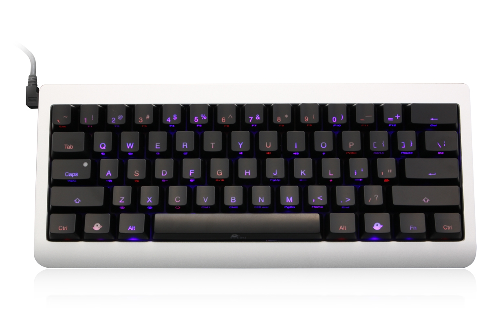
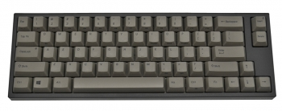
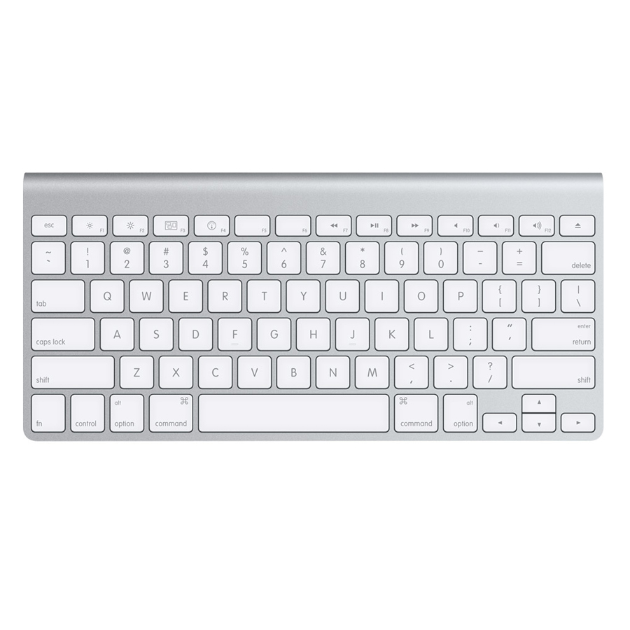
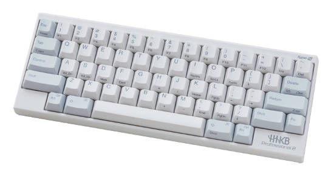
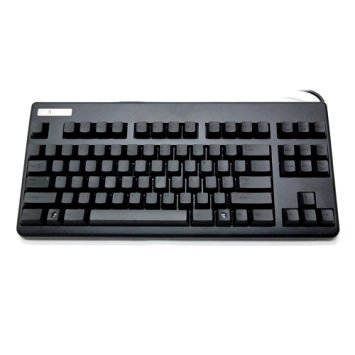

要买机械式键盘之前，我们得先好好的了解一下它，毕竟一个机械式键盘是 2 千元以上的价位，机械式键盘又分了好几种轴承、尺寸，每一种都提供不同的打字感觉与声响，不管是哪一种机械式键盘，打字的感觉都要比一般薄膜式好多了，尤其是我平常在用的"青轴" 机械式键盘，每个按键按下去的声音都铿锵有力，打字时听到一个清脆的声音，会有种某明的节奏感，越打心情就越好。
机械式键盘轴承
机械式键盘轴承会用颜色来区分，不同的颜色有不同的敲击感觉，有些机械式键盘只要轻轻一按就能触发按键，而有些声音很大声，有些反弹力道大，看个人不同的要求，每一种轴承都有其喜好者。
| 轴承 | 声音 | 按键力道(克) |
|---|---|---|
| 青轴 | 大 | 50g |
| 红轴 | 小 | 45g |
| 黑轴 | 小 | 60g |
| 茶轴 | 中 | 55g |
| 绿轴 | 大 | 80g |
各种轴承按压过程图示


青/茶轴
茶轴和青轴在打字时，会有触动按键的手感，这样使用者才知道有成功按到按键，从上图可以看，茶轴和青轴按键压到一半时，会有一个小小的卡榫，让你感受到一点点的阻力，这样才会有触动按键的感觉，这点是薄膜式键盘完全比不上的，而青轴的触动手感最明显，像传统打字机一样，按一下会有 clicky 一声，很有节奏的敲击感。
茶轴的按键触动感会比青轴弱一些，而声音(噪音)也比较小。
红/黑轴
黑轴与红轴按键为线性按压，按键直上直下，触发快速，打字也会比较快，而红轴的压按力道又比黑轴更轻，红/黑轴在按压的过程式没有受到任何阻力，所以声音小，按下按键也比较没有感觉。
红/黑轴还有个点不同，就是黑轴必需按压较深才会触动按键，所以黑轴比较不被因为轻轻一按，就送出字母，但是打字的速度也会稍稍被拖慢一点。
静音红轴
静音红轴的价格比红轴贵，优点是按下去真的没有声音，可借它的触感有点像薄膜式，按习惯红轴的人应该会不习惯静音红轴，因为按的力道变大( 我的个人感觉)，我目前有一把静音红轴，后来不习惯就把 Enter,Shift , Backspce, Space 这几个大键换个红轴，原因是我的小姆指没什么力，按静音红轴久了，小姆指就好痛 !!! 想玩静音红轴的人最好先去试按。
各种轴承的声音
声音的大小也会严重影响到购买的意愿，像我同事就有明确的表示，不希望我在公司用声音很大声的青轴键盘 Q _ Q ，就算是在家里使用，你也要考虑到家人、小孩与邻居，如果你深夜不睡觉使用键盘，很可能会吵到家人无法入睡，当年还是学生的时候，光是深夜敲打一般的薄膜式键盘，我耳朵敏感的室友就受不了。
机械式键盘有一种自已降低音量的方式，就是自行安装消音环 O-ring，大部分的机械式键盘都会附赠拔键器，先用拔键器把帽盖拔出，装入 O-ring ，再把帽盖装上去就好了，难的是 100 多颗按键要手动一个一个装上 O-ring 。
声音比较由大至小： 绿轴 > 青轴 > 茶轴 > 红轴 > 黑轴 > 静音红轴 (Silent Red Cherry )。
以下是我从 youtube 找的机械式键盘试用的声音：
黑、红、青、茶，灰轴的声音
茶轴的声音
红轴与青轴的声音比较
国外声音测试： 有红、黑、茶、青轴，很清楚的展示，对声音很在乎的人一定要看这个 video。
国外有人自行在键盘上加了 O-ring 降低按键声音，并拍影片放上 youtube，有茶轴，青轴跟黑轴的测试。
键盘尺寸
键盘尺寸可以分成三种，分别是 100%, 80%, 60%，100% 是一般常见的大键盘，而 80% 则是去掉数字键， 60 % 则是去掉方向键整个区块。
生产机械式键盘的厂商有： Ducky, Cherry, Filco, Realforce, Ione, Logitech 等等，你可以自已上网查查他们有没有出你要的尺寸。
60% 机械式键盘
| 键盘名称 | 尺寸 | 图片 |
|---|---|---|
| Ducky mini | 60% |  |
| Leopold FC660C (电容式) FC660M (机械式) |
70% |  |
| Mac Wireless | 60% |  |
| HHKB ( Happy Hacking Keyboard) (电容式键盘) |
60% |  |
| Paradise V60 | 60% | |
| KBT pure pro | 60% | |
| Vortex POK3R | 60% |  |
| DIY GH60 | 60% |  |
60% 的机械试键盘很难买到，卖的商店也不多，以下是一些我有找到的 60% 键盘，其中 HHKB 是日本生产的电容式键盘，"Mac Wireless keyboard" 则不相容於 windows ，下手买的时候要特别注意。
Leopold FC660C 虽然是 70% 键盘，但它有内建方向键，若不习惯没方向键的键盘，就可以考虑这一组。
Vortex POK3R 这把键盘是台湾生产的，但是在台湾没有经销商， vortex 这家公司也没有要卖散客，只能去 https://mechanicalkeyboards.com/ 买，从美国买键盘光是运费就要一 千出头，另一个选择是去淘宝买 iKBC 出的 Poker / Poker2 / Poker3 。
我原本有想要买 Pok3r / poker 系列的键盘，因为它号称全键硬体编程，让我们可以自定义按键输出，但后来我在网路上找了很多文章，发现它可以设定的只有 1. 单键 binding (例如 A => xxx, Win => ctrl)， 2. Fn+单键 binding (例如 Fn+A => ←)，而我的习惯有一项是 "Ctrl + Alt + j" => "home"，所以这把键盘没达到我的标准。
GH60 只是一块PCB 板，这块 PCB 板就是机械式键盘的核心材料之一，我们可以自已买材料来组装拥有个人风格的键盘，有兴趣 DIY 键盘的话，可以参考我的这篇文章。
80% 机械式键盘
| 键盘名称 | 尺寸 | 图片 |
|---|---|---|
| Realforce 87u | 80% |  |
| Ducky One | 80% |  |
小心皮革漆
许多黑色的键盘表面都会涂一层皮革漆，皮革漆很不耐用，两年内皮革漆就会开始熔化，表面变成黏黏的很恶心，所以买键盘的时候要特别留意键盘是否有涂皮革漆，拒买!。
哪里可以买
- https://mechanicalkeyboards.com/ 这个国外网站有各式各样的键盘，但是我没在这买过。
- https://tw.bid.yahoo.com/tw/booth/PC-PARTY-Y6527527667 ：Yahoo 拍卖/商城也都有在卖机械式键盘。
- 我的青轴键盘是在台北光华"金键盘"买的，地点不太好找，要问一下隔壁的小摊阿姨。
- 光华总骐也不错，现场提供许多机械式键盘可以试打。
- Leopold 台湾目前只有 pchome 这家商店买得到： http://www.pcstore.com.tw/happyfinger/S017JT4.htm ，不过他们的轴选择不多，像是我要的红轴就没有，或是直接到韩国网站买 http://www.leopold.co.kr/ 。